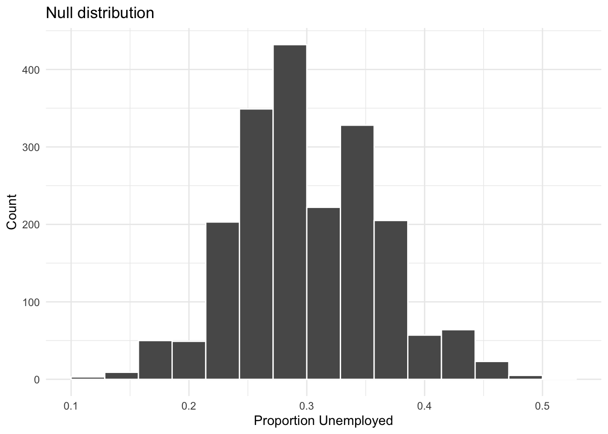

Module 4.1
Hypothesis Testing 1
Overview
In this module, we will introduce the concept of hypothesis testing. Hypothesis testing is a method for making inferences about a population parameter based on a sample statistic. We will discuss the key components of hypothesis testing, including the null hypothesis, the alternative hypothesis, the p-value, and the critical value. We will also work through a hypothetical example involving a jobs training program to illustrate how hypothesis testing works in practice. To get familiar with the basic intuition behind hypothesis testing, have a look at the following video:
Hypothesis testing
Hypothesis testing is a method for making inferences about a population parameter based on a sample statistic. Say we have a sample statistic, like the mean of a sample, and we want to know if this sample statistic is different from a population parameter. Hypothesis testing allows us to make this determination.
A key component of hypothesis testing is the null hypothesis. The null hypothesis is a statement that the population parameter is equal to a specific value. The alternative hypothesis is the statement that the population parameter is different from the specific value. You can think of the null hypothesis as the “status quo” or the idea that “nothing is going on”, and the alternative hypothesis as the research question or the idea that “something is different.”
For example, say we had a bag of M&Ms and we found that 90% of the M&Ms were blue. We might think that this is an aberration from the normal distribution of M&M colors in a typical bag of M&Ms. In this scenario, the null hypothesis would be that the proportion of blue M&Ms is equal to 0.24 (the typical proportion of blue M&Ms in a bag). The alternative hypothesis would be that the proportion of blue M&Ms is different from 0.24.
To test our hypothesis, we are going to collect a sample from the population and create a null distribution. The null distribution is the distribution of sample statistics we would expect to see if the null hypothesis were true. We can then compare our sample statistic to the null distribution to determine if our sample statistic is significantly different from the population parameter.
One concept we want to be familiar with in the context of hypothesis testing is the p-value. The p-value is the probability of observing a sample statistic as extreme as the one observed, given that the null hypothesis is true. If the p-value is less than a certain threshold called a critical value (\(\alpha\)), we reject the null hypothesis. If the p-value is greater than the threshold, we fail to reject the null hypothesis. The most common critical value used in hypothesis testing is 0.05.
For example, if we found that the p-value for our M&M example was 0.03, this would suggest that the probability of observing a sample proportion of blue M&Ms as extreme as the one observed is 0.03 (or 3%), given that the null hypothesis is true. Since 0.03 is less than 0.05, we would reject the null hypothesis that the proportion of blue M&Ms is equal to 0.24 and accept the alternative hypothesis that something unusual is goin on with our bag of M&Ms.
When people report “statistically significant” results, they mean that the p-value from their analysis is less than 0.05. But it is important to remember that the .05 threshold is a convention. p=0.049 is under the cutoff, while p=0.051 is not but substantively these are not very different.
Jobs training program example
To get a better sense of what hypothesis testing is all about, let’s work through a hypothetical example involving a jobs training program. International development organizations are sometimes interested in providing training to people in order to help them find a job. After implementing a jobs training program, the organization might want to know if the program was successful in helping people find jobs.
So let’s imagine a scenario in which the unemployment rate in a low-income country is 30%. One organization claims that its jobs training program is a success because only 15 of the 60 people that they trained did not have a job:
“Our jobs program is a success because only 15 of the 60 people that we trained did not have a job. Thus our 25% unemployment rate beats the country’s unemployment rate of 30%.”
First, is it possible to assess this hypothetical organization’s claim using the data and information presented thus far?
The answer is “No.” We need to know more about how people were selected for the program in order to assess causality (e.g., were they randomly assigned?). But, we can still ask whether the unemployment rate of 25% could be due to chance.
Let’s create some data to match our hypothetical example. We will create a simple dataset with 60 observations, where 15 people are unemployed and 45 people are employed.
Now let’s visualize it with a bar chart.
jobs_program |>
ggplot(aes(x = outcome)) +
geom_bar(fill = "steelblue") +
labs(
title = "Jobs program outcomes",
x = "Outcome",
y = "Count"
) +
theme_minimal()For our null hypothesis, we will assume that the unemployment rate among those in the jobs program is no different than the country average of 30%, e.g. “nothing is going on.” Our alternative hypothesis will be that the unemployment rate is lower than the country average of 30%, e.g. “something is different.”
Null hypothesis (\(H_0: p = 0.30\)): “There is nothing going on.”
Unemployment rate among those in the jobs program is no different than the country average of 30%.
Alternative hypothesis (\(H_A\)): “Something is different.”
Unemployment rate is lower than the country average of 30%.
We are then going to ask wheter, assuming the null hypothesis is true, the unemployment rate we observe be due to random chance. If yes, we do NOT reject the null hypothesis. If it is not very likely that we would observe the data due to chance, then we REJECT the null hypothesis and accept the alternative hypothesis.
We are going to figure out what the distribution of outcomes we we might observe could be if nothing is going on. This is called the null distribution. We will then compare our observed data to the null distribution to see if our data is likely to have come from this distribution.
In this case, we are going to simulate the null distribution by randomly sampling from the population of 60 people and calculating the proportion of unemployed people in each sample. We will do this many times to get a sense of what the null distribution looks like.
The next step, then, is to set up a simulator to select samples of 60 individuals with a 30% chance of being unemployed We can use the tidymodels package to help with this process:
#load tidymodels
library(tidymodels)
# simulate the distribution
null_dist <- jobs_program |>
specify(response = outcome, success = "unemployed") |>
hypothesize(null = "point", p = c("unemployed" = 0.30, "employed" = 0.70)) |>
generate(reps = 2000, type = "draw") |>
calculate(stat = "prop")In this code, we are specifying the response variable as outcome and the success variable as unemployed. We are hypothesizing that the probability of being unemployed is 0.30 and the probability of being employed is 0.70. We are generating 2000 samples and calculating the proportion of unemployed people in each sample.
Let’s visualize the null distribution. We can do this by using the visualize() function from the infer package, which is part of the tidymodels suite of packages.
null_dist |>
visualize() +
labs(
title = "Null distribution",
x = "Proportion Unemployed",
y = "Count"
) +
theme_minimal()
Now let’s calculate the p-value.
null_dist |>
get_p_value(obs_stat = 15/60, direction = "left")# A tibble: 1 × 1
p_value
<dbl>
1 0.242What does the p-value tell us? The p-value is the probability of observing a test statistic as extreme as the one we observed (15/60) under the null hypothesis. In this case, the p-value is 0.228, which means that there is a 22.8% chance of observing a proportion of unemployed people as extreme as 15/60 if the null hypothesis is true. This p-value is well above the critical value of .05, indicating that we do not have enough evidence to reject the null hypothesis.
Let’s visualize the p-value against the null distribution. We can do this by using the shade_p_value() function from the infer package and adding that to our histogram of the null distribution.
null_dist |>
visualize() +
shade_p_value(obs_stat = 15/60, direction = "left") +
labs(
title = "Null Distribution with shaded p-value",
x = "Proportion Unemployed",
y = "Count"
) +
theme_minimal()
As you can see, a large proportion of the null distribution is to the left of the observed proportion of unemployed people in the jobs program. This indicates that the observed proportion is not very extreme compared to what we would expect under the null hypothesis.If the true unemployment rate were 30 percent and we draw samples of 60, about 23 percent of the time we will get an unemployment rate lower than the one among the participants in the program (simply due to random chance). Again, this entails that we do NOT reject the null hypothesis because the unemployment rate in the sample could likely have been due to chance.